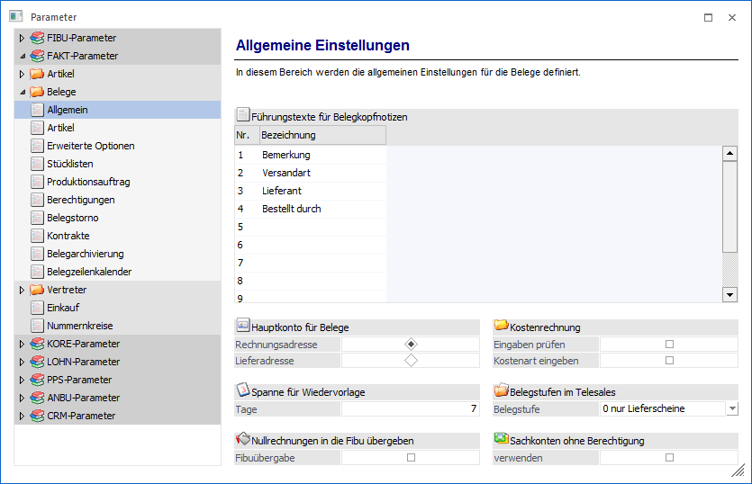
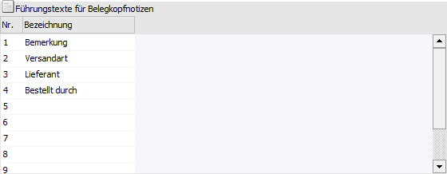
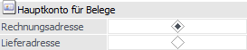
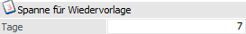
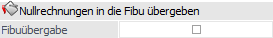
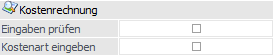
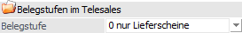
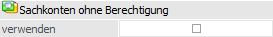

Über den Bereich "FAKT-Parameter - Belege - Allgemein" können allgemeine Einstellungen für die Belege der WinLine FAKT vorgenommen werden.
Hinweis
Standardmäßig wird das Fenster in einem "Lesemodus" geöffnet, d.h. es können die bestehenden Einstellungen kontrolliert, Änderungen allerdings nicht durchgeführt werden. Hierfür muss zunächst mit Hilfe des Buttons "Bearbeiten" der "Bearbeitungsmodus" aktiviert werden. Alternativ kann diese Aktivierung auch über das Kontextmenü der rechten Maustaste (Funktion "Applikation xxx bearbeiten") erfolgen.

Führungstexte für Belegkopfnotizen

Ø Bezeichnung
Im Belegkopf stehen im Register "Text" 10 "Notizzeilen" zur Verfügung, in welche spezifische wiederkehrende Textierungen abgefragt werden können (z.B. Frachtbedingungen, Spediteur, Kurzbeschreibung des Beleginhaltes oder Art des Geschäfts). Die Führungstexte (d.h. die Bezeichnung / die Beschreibung) für diese 10 Texteingabefelder werden hier definiert.
Hauptkonto für Belege

Ø Rechnungsadresse / Lieferadresse
Mit dieser Einstellung kann gesteuert werden, ob die Belege mit der Kontonummer der Rechnungsadresse oder mit der Kontonummer der Lieferadresse gespeichert werden soll. Anhand dieser Einstellung wird auch gesteuert, ob in der Belegerfassung zuerst die Rechnungsadresse oder zuerst die Lieferadresse eingegeben wird. Zusätzlich werden folgende Datenbereiche vom "Hauptkonto" geladen:
ü Summenrabatt
ü Belegart
ü Preisliste
ü Teillieferung erlaubt
ü Priorität
ü Kostenträger für Maskierung aus der Belegart im Belegkopf
ü Steuerleiste für UstCode
ü Kundengruppe
ü Rabattleisten
ü Bestprice-Kennzeichen für Preisfindung
Des Weiteren wird das Hauptkonto für die Dispotabelle und für die Kundenumsatzliste verwendet. Eine eventuelle Buchung für die Finanzbuchhaltung wird für die Rechnungsadresse erstellt.
Hinweis
Folgende zusätzliche Regelungen gelten in diesem Zusammenhang:
ü Immer von der Lieferadresse genommen wird
ü Vorbelegung für Auspr.1 und Auspr.2
ü Tour und Gebiet
ü Immer von der Rechnungsadresse genommen wird
ü Kreditlimitprüfung (Warn-/Sperrtexte, Warn-/Sperrbeträge)
ü OP-Kennzeichen
ü Falls die Rechnungsempfänger-Automatik eingeschaltet ist, werden von der Lieferadresse verwendet
ü Vertreter
ü Belegkopftexte
ü Laut Belegart
ü Zahlungskondition (Belegartenstamm - Register "Fibu / Kore" - Bereich "Zahlungskondition")
Achtung
Diese Option darf nur dann umgestellt werden, wenn keine offenen Belege mehr vorhanden sind. Wird dies nicht beachtet, kann es bei der Belegerfassung zu ungewünschten Meldungen kommen.
Spanne für Wiedervorlage

Ø Tage
In der Belegbearbeitung der WinLine FAKT kann manuell ein Wiedervorlagedatum eingetragen werden, aufgrund dessen Angebote, aus denen noch keine Aufträge geworden sind, bearbeitet werden können.
Dieses Wiedervorlagedatum kann auch automatisch vorbelegt werden. Hierfür muss im Eingabefeld "Tage die Anzahl der Tage eingegeben werden (sollte zumindest 1 sein), nach denen das Angebot, sofern es nicht bereits zu einem Auftrag wurde, in der Wiedervorlage erscheinen soll.
Aufgrund dieser Eintragung und des Belegdatums wird dann das Wiedervorlagedatum errechnet.
Nullrechnungen in die FIBU übergeben

Ø Fibuübergabe
Ist diese Option aktiviert, so werden auch Null-Rechnungen aus der WinLine FAKT beim Belegdruck an die WinLine FIBU übergeben.
Kostenrechnung

Ø Eingaben prüfen
Wenn die Checkbox "Eingaben prüfen" aktiviert ist, können in der Belegbearbeitung keine ungültigen Kosteninformationen eingegeben werden.
Des Weiteren wird abgeprüft, ob die verwendete Kostenstelle bzw. der Kostenträger inaktiv gesetzt ist oder deren Laufzeit nicht mit dem Belegdatum übereinstimmt. Ist dies der Fall, erscheint beim Speichern des Beleges ein entsprechender Hinweis und der Beleg wird nicht weiterbearbeitet.
Hinweis
Wenn die Kosteninformationen wie z.B. der Kostenträger zu Auswertungen verwendet werden sollen, die nicht in der WinLine KORE stattfinden, dann muss diese Checkbox deaktiviert bleiben.
Achtung
Wenn zusätzlich zu dieser Checkbox auch die Option "keine Kosteneingabe ohne Kostenträger" in den KORE-Parametern aktiviert ist, muss in der Belegzeile zwingend ein Kostenträger eingegeben werden, wenn beim Erlöskonto eine Kostenart (keine Gemeinkostenart) hinterlegt ist und eine Kostenstelle vorhanden ist.
Ø Kostenart eingeben
Wenn diese Option aktiviert ist, dann steht in der Belegerfassung in der Artikelerfassung das zusätzliche Feld "Kostenart" zur Verfügung (zu aktivieren über das Kontextmenü der rechten Maustaste - Funktion "Spalten anzeigen/verstecken"). Damit besteht die Möglichkeit, auch die Kostenart, die abhängig von dem verwendeten "Erlöskonto" vorgeschlagen wird, pro Erfassungszeile abzuändern.
Belegstufen im Telesales

Ø Belegstufe
Im Bereich "Telesales" besteht die Möglichkeit Lieferscheine und Fakturen zu erfassen. An dieser Stelle hat man die Auswahl verschiedener Handhabungen. Die Option "Belegstufen im Telesales" ist standardmäßig aktiviert mit "0 = nur Lieferscheine". Die Auswahl einer anderen Variante erfolgt über eine Auswahlbox und stellt folgende Möglichkeiten zur Auswahl:
ü 0 - nur Lieferscheine
ü 1 - Lieferscheine (Standard) und Fakturen
ü 2 - Fakturen (Standard) und Lieferscheine
ü 3 - nur Fakturen
Davon abhängig, welche Option an dieser Stelle ausgewählt und gespeichert wird, wird der Menüpunkt "Telesales" in der entsprechenden Belegstufe geöffnet. Auch im Belegmanagement wird mit Aktivieren des Buttons "Telesales" ein bestehender Beleg in der entsprechenden Belegstufe geladen.
Sachkonten ohne Berechtigung

Ø (Sachkonten ohne Berechtigung) verwenden
Grundsätzlich kann mit einem Sachkonto an keiner Stelle in der WinLine gearbeitet werden, wenn der Benutzer keine entsprechenden Berechtigungen aufweist. Diese Logik kann für die Belegerfassung durch Aktivierung dieser Option übersteuert werden, d.h. solch ein nicht berechtigtes Sachkonto kann vom Benutzer in der Belegerfassung angesprochen / genutzt werden.
Hinweis
Unabhängig von dieser Option werden nicht berechtigte Sachkonten in der Autovervollständigung und im Kontenmatch nicht angezeigt.